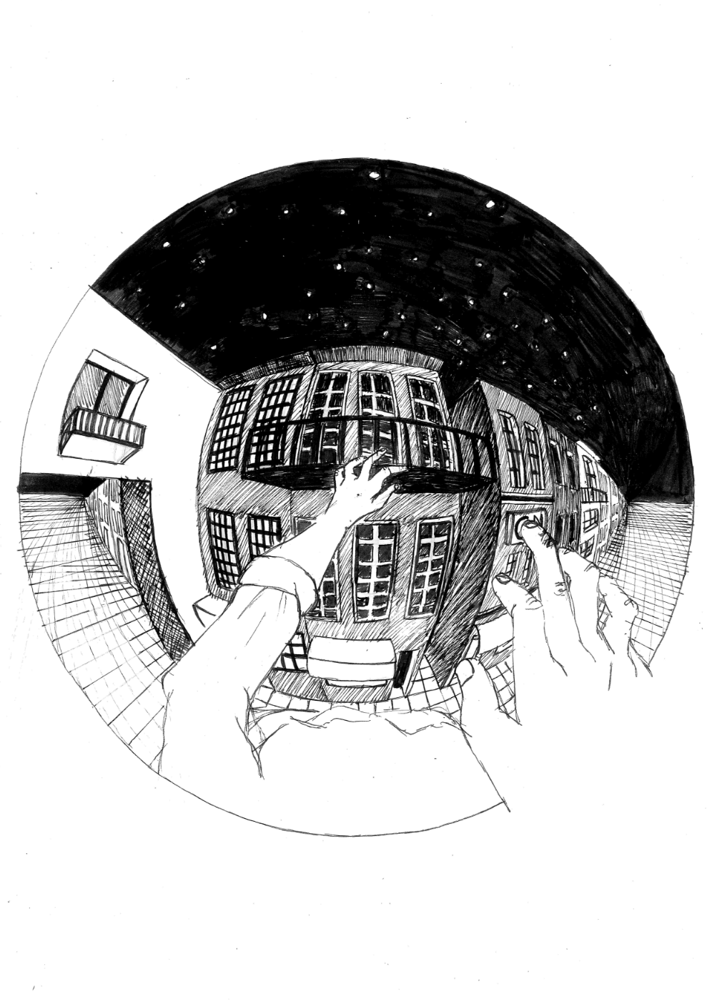

Mário Henrique-Leiria's "Contos do Gin-Tonic" is a book with surreal content. The purpose of this proposal was to make the illustration for one of the stories, the cover, the flaps, the guards and a capitular for the book. When reading the stories I noticed a strong presence of distortion of reality. And a good way to deform the real is the curvilinear perspective.
